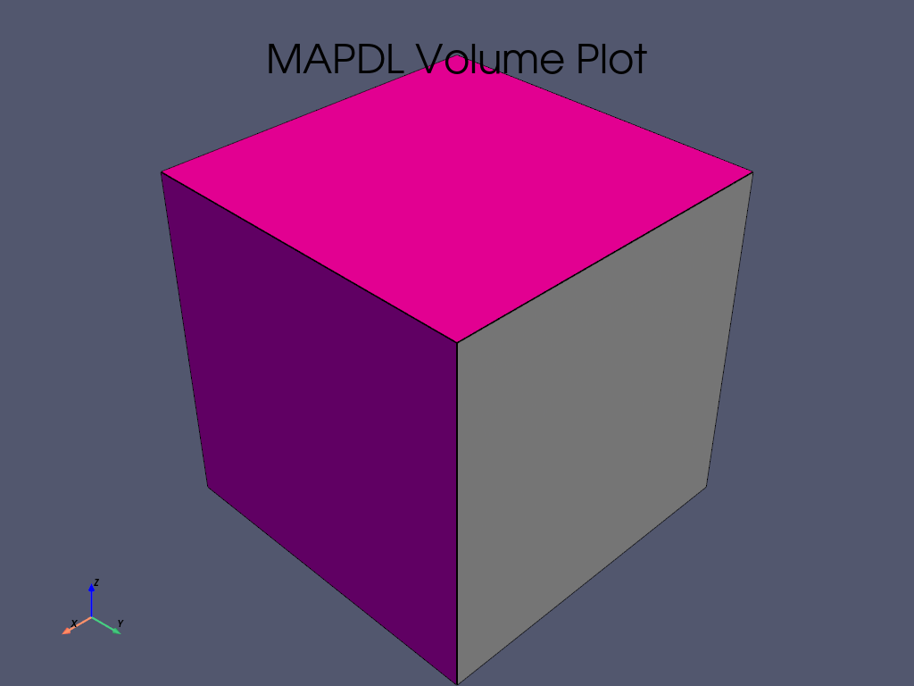
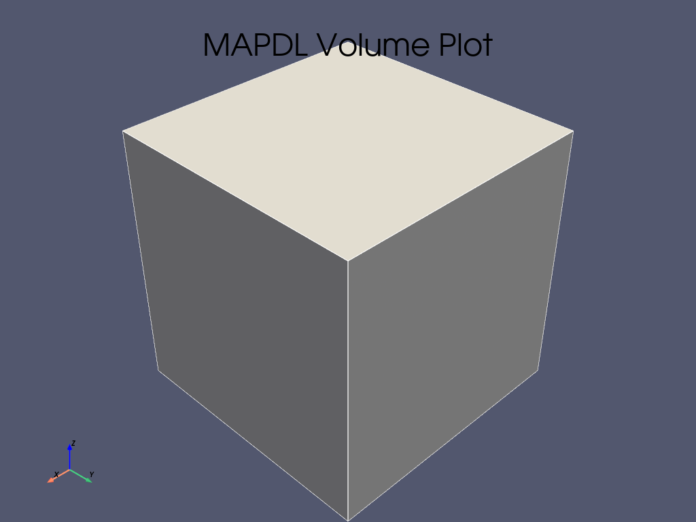

Note
Go to the end to download the full example code
添加一个新的 Gallery Example#
该示例演示了如何添加新示例，同时也是创建示例时可使用的模板。
任何新示例的顶部都应包含该注释块。每个示例都应有以下格式的 reference tag/key：
.. _ref_my_example:
.._ref_ 是必须的。后面的内容都是引用标记。按照惯例，我们将所有引用都放在 snake_case 中。
这一部分应简要概述示例的内容和/或演示。应修改标题，以反映示例所涉及的主题。
新的示例应以 python 脚本的形式添加到：
PyMAPDL/examples/XY-example-folder-name/
Note
除非绝对必要，否则请避免创建新文件夹。如果有疑问，请将示例放在最接近其工作的文件夹中，其确切位置可在拉取请求中提供建议。
如果 必须 创建一个新文件夹，请确保添加一个 README.txt ，其中包含文件夹的引用、标题和一句话描述。否则 Sphinx 将忽略新文件夹。
示例文件名的格式可以为：
XY-example-name.py
其中 XY 是示例的编号。如果已经有三个编号分别为 00 、 01 和 02` 的示例，则您的示例必须随后使用前缀 ``03 。
前言内容结束后，第一个代码块即开始。
from ansys.mapdl.core import launch_mapdl
# start MAPDL
mapdl = launch_mapdl()
print(mapdl)
# Your code goes here...
# mapdl.prep7()
# mapdl...
Product: Ansys Mechanical Enterprise
MAPDL Version: 23.1
ansys.mapdl Version: 0.67.0
Section Title#
代码块可以用文本 “Sections” 来分割，而文本 “Section” 也会被转译为 restructured text。
这也将被转译成生成的 jupyter lab 中的 markdown 单元。 各 Sections 可包含与示例有关的任何信息，如分步注释或有关动机的说明等。
在 jupyter lab 中，如果代码块的末尾没有指定代码（如上一个代码块中的 mapdl ），输出将根据其 __repr__ 生成并打印到屏幕上。
否则，可以使用 print() 输出 __str__ 。
# .. note::
#
# 类的 ``_repr_()`` 方法定义了实例化对象的输出信息，重写该方法，可以输出我们想要的信息，对类的实例化对象有更好的了解。
# more code...
mapdl.clear()
mapdl.prep7()
print(mapdl)
Product: Ansys Mechanical Enterprise
MAPDL Version: 23.1
ansys.mapdl Version: 0.67.0
Plots and images#
如果使用 mapdl 绘图命令，结果将自动生成并显示在页面中。就像这样
mapdl.block(0, 1, 0, 1, 0, 1)
mapdl.vplot()
- 
- 
Further Plots and images#
Matplotlib 图形也会在 html 中呈现。
import matplotlib.pyplot as plt
fig = plt.figure()
ax = fig.add_subplot(111)
x = list(range(10))
y = [i**2 + 3 * i - 1 for i in x]
ax.plot(x, y)
ax.set_xlabel("x")
ax.set_ylabel("y")
plt.show()
Animations#
您甚至可以创建动画。请参阅 PyVista 网格集成 获取示例。顺便说一下，这也是你链接到另一个例子的方法。
Making a Pull Request#
示例完成并在本地验证构建后，您就可以提交拉取请求 (PR)。根据此处的分支命名规则，包含示例的分支应以 doc/ 作为前缀：Contributing to pandas 。
请注意，您只需创建 python 源示例文件 (.py) 即可。jupyter lab、示例 html 和演示脚本都将通过 sphinx-gallery 自动生成。
Stopping mapdl
mapdl.exit()
Total running time of the script: (0 minutes 1.410 seconds)